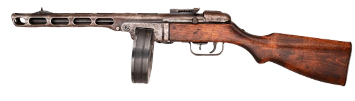

ФЕСТИВАЛЬ ВОЕННО-ИСТОРИЧЕСКОЙ РЕКОНСТРУКЦИИ «РУБЕЖ»
Здесь оживают страницы истории от Древней Руси до современности!
ПодробнееО ФЕСТИВАЛЕ
Фестиваль военно-исторической реконструкции «Рубеж» — это масштабное событие, которое переносит
зрителей
сквозь века: от эпохи древнерусских витязей до современных военных операций. 21 июня 2025 года в
городе
Советский на ул. Киевская, 67 развернется грандиозное действо с участием 200 реконструкторов в
аутентичной экипировке, 10 единиц исторической техники и зрелищными боями с применением охолощенного
оружия и пиротехники.
Помимо реконструкции, вас ждут интерактивные площадки с выставкой оружия и
обмундирования разных
эпох, мастер-классы по обращению с историческим вооружением, полевая кухня и концертная
программа.
21 июня 2025 года фестиваль военно-исторической реконструкции «Рубеж» представит грандиозное путешествие сквозь века — пять масштабных эпизодов военной истории России, воссозданных с максимальной исторической достоверностью.
ПРОГРАММА ПРОВЕДЕНИЯ ФЕСТИВАЛЯ
ОРГАНИЗАТОРЫ
ПОДДЕРЖКА
КОНТАКТНЫЕ ДАННЫЕ
г. Советский, ул. 50 лет Пионерии, 4
sozvezdie@sovrnhmao.ru